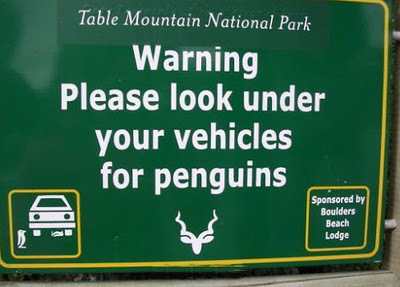

Saturday, December the 3rd, 2011
back to: title, date or indexes
Here at Hooting Yard we try to keep up with all the latest seabird news. As headlines go, this is rather impressive:
Lost puffin found at sex clinic
and it may or may not have something to do with this piece of signage:

Thanks to Andrew Dale (puffin) and Jeff Chilton (penguins).